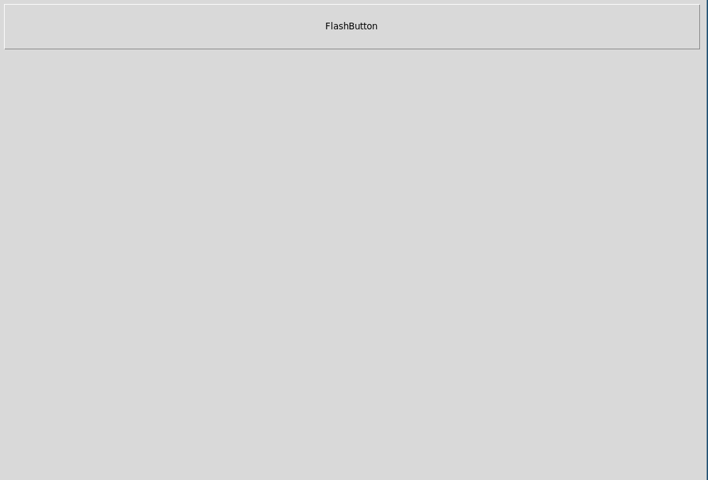

Sun Mar 19 14:27:14 2023
This is a short tutorial on how to use the packages oowidgets and tkoo to create megawidgets using techniques like inheritance, mixins or composition.
Let’s first load the package:
lappend auto_path .
package require oowidgets
puts [package present oowidgets]0.2
Once the package is loaded we can start with a few examples.
If we think about object oriented programming the first mechanism to learn is usually inheritance. Let’s use this mechanism and create an extended version of a ttk::button which has as well a flash function. We use the method oowidgets::widget to create a new class and a Tcl command for this widget. Please note that the classname must contain at least one uppercase character to not interfere with the created Tcl command which will be all lowercase.
Here our code:
after 2000
namespace eval ::flash {}
oowidgets::widget ::flash::Button {
constructor {path args} {
my install ttk::button $path -flashtime 200
my configure {*}$args
}
method flash {} {
set ot [my cget -text]
set ft [my cget -flashtime]
for {set i 0} {$i < 5} {incr i} {
my configure -text "......"
update idletasks
after $ft
my configure -text $ot
update idletasks
after $ft
}
puts flashed
my configure -text $ot
}
}This creates the class ::flash::Button and a command ::flash::button which should be used to create the widget. In the constructor we as well add a new configuration option -flashtime with a default value of 200. Let’s inspect the command created in the ::flash namespace:
puts [info commands ::flash::*]::flash::Button ::flash::button
We can now use the command ::flash::button the same way we would use the ttk::button, our new command however has now as well the flash method:
set fb [flash::button .fb -flashtime 100 -width 200 \
-text "FlashButton" \
-command { puts "I am a flash::button" }]
pack $fb -side top -padx 10 -pady 10 -ipady 20 -ipadx 20
$fb flashflashed
The options -flashtime is a new option which we added in our constructor of the flash::Button class.
As we use here public inheritance we can still use all the default ttk::button methods for instance a method like invoke and due to a renaming trick we can as well call the methods using the widget path:
### using variable
$fb invoke
#### using widget path
.fb invokeI am a flash::button
I am a flash::button
Let’s say we would like to extend the flash::button widget even further and we would like to inherit now from its class, flash::Button, we could do this like this:
oowidgets::widget ::flash::GreetButton {
superclass ::flash::Button
method greet {{message "Hello"}} {
puts $message
}
}
puts [info commands ::flash::*]::flash::Button ::flash::button ::flash::GreetButton ::flash::greetbutton
As you can see we have now the new class and the new command in our ::flash namespace.
Please note that the superclass statement must be the very first on our widget definition code.
We can now use this widget the same way like the flash::button widget:
set gb [flash::greetbutton .gb -text "Greeter"]
pack $gb -fill x -side top -padx 10 -pady 10 -ipady 20 -ipadx 20
$gb flash
$gb greet "Greetings from the greetbutton!"flashed
Greetings from the greetbutton!
The approach we used until now can be as well called public inheritance. Our new widgets expose all commands of the widgets from which they are derived. Sometimes you however you like to use private inheritance were you would like to expose only an limited amount of functionality of the underlying widget. You can achieve this by overwriting the unknown method to create an error in your new class. Do give an example we create a create a class ::flash::FlashButton which only has the flash, configure and cget methods but not anymore the invoke method of the standard ttk::button:
oowidgets::widget ::flash::FlashButton {
constructor {path args} {
ttk::style layout FlashButton [ttk::style layout TButton]
ttk::style configure FlashButton -anchor center
my install ttk::button $path -flashtime 100 \
-text [string repeat "\u2588" 10] -style FlashButton
my configure {*}$args
}
method unknown {method args} {
return -code error "Method $method not implemented! Valid methods are [info class methods ::flash::FlashButton -all]!"
}
# hide unknown method to disallow outside use
unexport unknown
method flash {} {
set fg black
set ft [my cget -flashtime]
for {set i 0} {$i < 5} {incr i} {
ttk::style configure FlashButton -foreground red
update idletasks
after $ft
ttk::style configure FlashButton -foreground $fg
update idletasks
after $ft
}
puts "slashbutton was flashed"
}
}
puts [info commands ::flash::*]::flash::Button ::flash::button ::flash::FlashButton ::flash::flashbutton ::flash::GreetButton ::flash::greetbutton
Let’s now use this flashbutton widget:
set fl [flash::flashbutton .fl -flashtime 200]
pack $fl -side top -padx 10 -pady 10 -ipady 20 -ipadx 20
$fl configure -command { puts Hi }
$fl flashslashbutton was flashed
catch {$fl invoke}
puts "$errorInfo"Method invoke not implemented! Valid methods are cget configure destroy flash!
while executing
"$fl invoke"
To remove as well configure and cget you could create two methods of that name which does nothing and then unexport them as you see with the unknown method.
An alternative to the shown approach above is the creation of mixins. Whereas inheritance often leads to large and complex hierarchies, mixins add some required functionality of the fly without the need to extend a base class. Ths approach is more flexible, just add the required mixin classes to get some desired behaviour. In the following we will create a mixin class mx::Flash which can flash both Labels and Buttons. We will then add this behaviour to our classes just easily.
Here our class which is not a widget usable by itself:
namespace eval ::mx { }
oo::class create ::mx::Flash {
method flash {{flashtime 200}} {
set cls [my tkclass]
if {$cls eq "TButton"} {
set txt [my cget -text]
for {set i 0} {$i < 5} {incr i} {
my configure -text [string repeat "-" [string length $txt]]
update idletasks
after $flashtime
my configure -text $txt
update idletasks
after $flashtime
}
} elseif {$cls in [list "Text" "TLabel"]} {
set fg [my cget -foreground]
for {set i 0} {$i < 5} {incr i} {
my configure -foreground salmon
update idletasks
after $flashtime
my configure -foreground $fg
update idletasks
after $flashtime
}
}
puts "flashing $flashtime long"
}
}::mx::FlashTo add a mixin to a Tk widget we need first to create a proxy class which is nothing more than the original widget without any addtions. Here two proxy classes:
oowidgets::widget ::mx::Button {
constructor {path args} {
my install ttk::button $path
my configure {*}$args
}
}
oowidgets::widget ::mx::Label {
constructor {path args} {
my install ttk::label $path
my configure {*}$args
}
}
puts [lsort [info command ::mx::*]]::mx::Button ::mx::Flash ::mx::Label ::mx::button ::mx::label
Once this is done we can add to our classes the mixin:
oo::define ::mx::Button { mixin ::mx::Flash }
oo::define ::mx::Label { mixin ::mx::Flash }
puts [info class methods ::mx::Button -all]
set mxb [::mx::button .mxb -text "Hello ::mx::button"]
set mxl [::mx::label .mxl -text "Hello ::mx::Label" -anchor center]
pack $mxb -side top -fill x -padx 10 -pady 10 -ipadx 5 -ipady 5
pack $mxl -side top -fill x -padx 10 -pady 10 -ipadx 5 -ipady 5
update idletasks
$mxb flash 400
$mxl flash 100cget configure destroy flash
flashing 400 long
flashing 100 long
The advantage of this approach is obvious: instead of creating complex hierarchies we just create classes with some desired functionality and attach them to our widgets if we need. As the declaration of these proxy classes there exists already a namespace which contains the proxy classes for all standard ttk and tk widgets in case when no ttk widget is availble. They can be loaded using a package require tkoo:
package require tkoo
puts [lsort [info procs ::tkoo::*]]::tkoo::button ::tkoo::canvas ::tkoo::checkbutton ::tkoo::combobox ::tkoo::entry ::tkoo::frame ::tkoo::label ::tkoo::labelframe ::tkoo::listbox ::tkoo::menu ::tkoo::menubutton ::tkoo::notebook ::tkoo::panedwindow ::tkoo::progessbar ::tkoo::radiobutton ::tkoo::scale ::tkoo::scrollbar ::tkoo::separator ::tkoo::sizegrip ::tkoo::spinbox ::tkoo::text ::tkoo::treeview
Let’s add the Flashing to a text widget:
set txt [tkoo::text .txt]
oo::define ::tkoo::Text { mixin ::mx::Flash }
$txt insert end "Hello this is some text\nWhich is inserted!"
pack $txt -side top -fill x -padx 10 -pady 10 -ipadx 5 -ipady 5
$txt flashflashing 200 long
Below you see the executed code:

If we think about megawidgets usually we mean that there are widgets which are assembled out of several widgets. A typical example is a LabEntry consisting out of a Label and a Entry widget side by side which are usually arranged using a frame, so something like this:
Let’s create for illustrative purposes such a LabEntry widget. We will place it as well in a new namespace:
namespace eval ::comp { }
oowidgets::widget ::comp::LabEntry {
variable ent
variable lab
constructor {path args} {
# the main widget is the frame
# add an additional label
my install ttk::frame $path
set lab [ttk::label $path.lab]
set ent [ttk::entry $path.ent]
pack $lab -side left -padx 5 -pady 5
pack $ent -side left -padx 5 -pady 5
my configure {*}$args
}
# expose the internal widgets using subcommands
method label {args} {
if {[llength $args] == 0} {
return $lab
}
$lab {*}$args
}
method entry {args} {
if {[llength $args] == 0} {
return $ent
}
$ent {*}$args
}
# you could as well delegate all methods to the entry widget
# making it your default widget
method unknown {args} {
$ent {*}$args
}
}
puts [info commands ::comp::*]::comp::LabEntry ::comp::labentry
Usually it is a good idea to place your widgets in a frame and arrange them therein using your geometry manager like pack or grid. The you can decide which methods of your widget to expose. In the example above here are all methods exposed using the methods entry and label which then forward the arguments to the right internal widget. If no method is given to these commands just the internal widget is returned.
set lent [::comp::labentry .lentry]
pack $lent -side top -padx 10 -pady 20
$lent label configure -text "Label: "
$lent entry insert 0 "Some text"
puts [$lent entry]
bind [$lent entry] <Destroy> { puts "destroyed entry" }
bind $lent <Destroy> { puts "destroyed labentry" }
destroy $lent.lentry.ent
destroyed entry
destroyed labentry
If you like to create new options like -labeltext you should create a new configure method in your class where you then delegate this option to the right widget. That could look something like this:
oo::define ::comp::LabEntry method configure {args} {
next {*}$args
my label configure -text [my cget -labeltext]
}This can however soon become complex, so you have to update the configuration settings for the class if configure is called via obj label configure. So probably it is the easiest way to leave it as it it is and then update the component configurations via the exposed commands label and entry. This then needs however separate calls for intialization of the main widget and then initialization of the components.